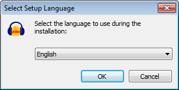

Languages
From Audacity Development Manual
To change the language Audacity runs in, use the Interface Preferences, or exit Audacity and modify the audacity.cfg settings file. Reinstalling Audacity does not change the language setting in audacity.cfg, unless you run the Windows installer of Audacity and explicitly choose Reset Preferences.
Contents
- Changing language when installing on Windows
- Changing language in Interface Preferences
- Change language in the system settings
- Supported non-English languages
Changing language when installing on Windows
When you install Audacity on Windows, during the installation you will get a dialog box which enables you to select the language to be used during the installation process. This choice of language is also set to be the working language on subsequent use of Audacity.
- 
This means that if you are on Windows and the language in your Audacity installation is not to your liking you can simply re-install Audacity and choose a different language.
Changing language in Interface Preferences
Open the Interface Preferences, choose the specific language required from the "Language" box, then click . Most of the interface will change language at once, but a very few interface elements will change next time you restart Audacity.
If you cannot read the menus because the text is in an unfamiliar language or has ??? characters, you can navigate the menus sequentially to change the language.
- Choose the second menu from the left in the Audacity menus at top left of the screen (on Mac, choose the first menu from the left)
- Choose the bottom item of that menu, (on Mac, choose the second item in that menu) which opens the Preferences
- In the list on the left of Preferences, choose the fifth item from the top
- On the right, open the second dropdown box containing a list of the language choices
- Select the language you want and press "ENTER" on your keyboard.
- Restart Audacity to fully complete the language change and re-order the Effect menu alphabetically.
Missing language choices
If only "English" or "System" choices are in the Languages box in Interface Preferences, ensure the "Languages" folder is in the correct location as follows:
- Windows: C:\Program Files\<your Audacity version>\Languages on 32-bit systems or
C:\Program Files (x86)\<your Audacity version>\Languages on 64-bit systems - Linux: /usr/share/locale if Audacity was installed from a repository package, or /usr/local/share/locale if you compiled Audacity from source code.
On Mac open /Applications/Audacity/, right-click or control-click over Audacity.app > Show Package Contents then ensure the "Resources" folder at Contents/Resources contains the correct LPROJ folders for each language.
Missing language files or folders can be corrected by reinstalling Audacity.
Change language in the system settings
Alternatively, you can quit Audacity and edit the audacity.cfg settings file. The .cfg file can be edited with any text editor. The .cfg file is located in the Audacity settings folder as follows:
- Windows 10/Windows 8/Windows 7/Windows Vista: Users\<username>\AppData\Roaming\Audacity
- Windows XP: Documents and Settings\<username>\Application Data\Audacity
- Mac: ~/Library/Application Support/audacity
- Linux: ~/.audacity-data
| In order to see the Audacity settings folder on Windows, Linux and OS X 10.7 or later, you may need to show hidden files and folders. See instructions for all versions of Windows and OS X 10.7 and later. |
To change language, find the [Locale] line in the .cfg file and change the line underneath it to your preferred language using the two-digit ISO 639-1 code. For example, "Language=en" (without quotes) sets English or "Language=de" sets German.
If the two lines for Locale do not exist in audacity.cfg (which will be the case if Audacity has only ever run in the system language) add the lines as in this example:
| [Locale] Language=de |
Now save audacity.cfg, restart Audacity and it will launch in your chosen language.
Supported non-English languages
As well as US English, the Audacity software supports a significant number of other languages. There are no localized versions of Audacity. Instead, single versions of Audacity for the various operating platforms are shipped with gettext MO files. These files are then used to display the different languages.
| All translations are provided by volunteers and may at times be incomplete. Any untranslated parts of the software will appear in US English. We are always looking for new volunteers to help translate not only Audacity itself but also the main Audacity website and this Manual. |
Unicode characters
Audacity is Unicode and thus should display non-English languages correctly on any localisation of the operating system if the system supports that language.
Supported non-English languages in Audacity
- af Afrikaans
- ar Arabic
- hy Armenian
- eu Basque
- be Belarusian
- bn Bengali
- bs Bosnian
- bg Bulgarian
- my Burmese
- ca Catalan
- zh Chinese (Simplified)
- zh_TW Chinese (Taiwan)
- hr Croatian
- cy Cymraeg (Welsh)
- cs Czech
- da Danish
- nl Dutch
- fa Farsi (Persian)
- fi Finnish
- fr French
- ga Gaelige
- gl Galician
- ka Georgian
- de German
- el Greek
- he Hebrew
- hi Hindi
- hu Hungarian
- id Indonesian
- it Italian
- ja Japanese
- km Khmer
- ko Korean
- lt Lithuanian
- mk Macedonian
- nb Norwegian (Bokmal)
- oc Occitan
- pl Polish
- pt Portuguese
- pt_BR Portuguese (Brazilian)
- ro Romanian
- ru Russian
- sr_RS Serbian (Cyrillic)
- sr_RS@latin Serbian (Latin)
- sk Slovak
- sl Slovenian
- es Spanish
- sv Swedish
- tg Tajik
- ta Tamil
- tr Turkish
- uk Ukrainian
- ca_ES@valencia Valencian
- vi Vietnamese